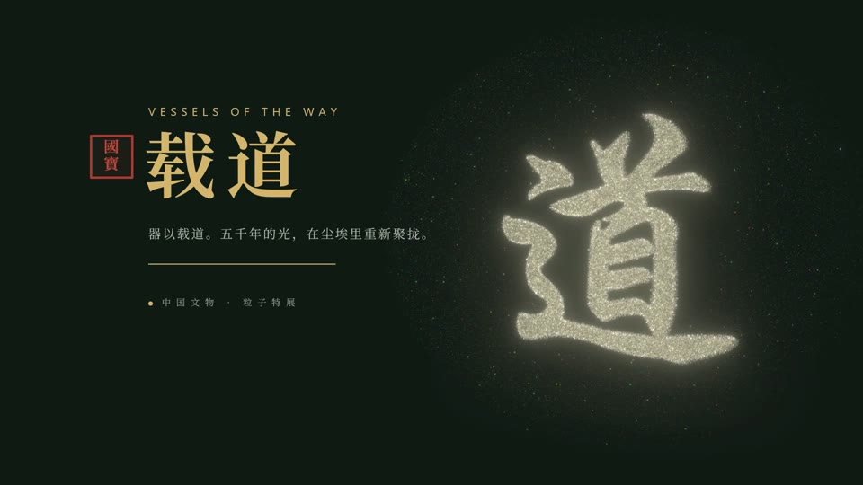
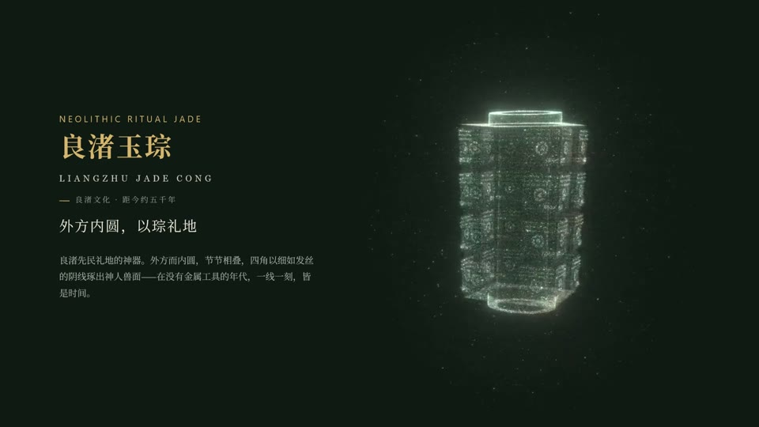
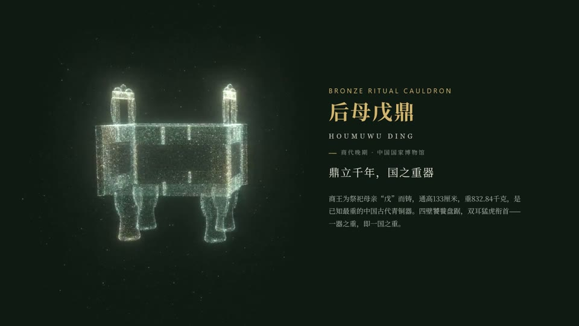
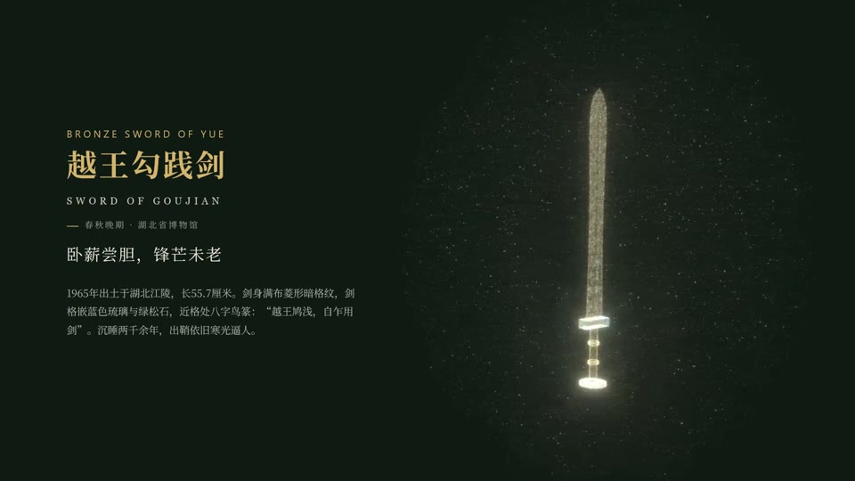
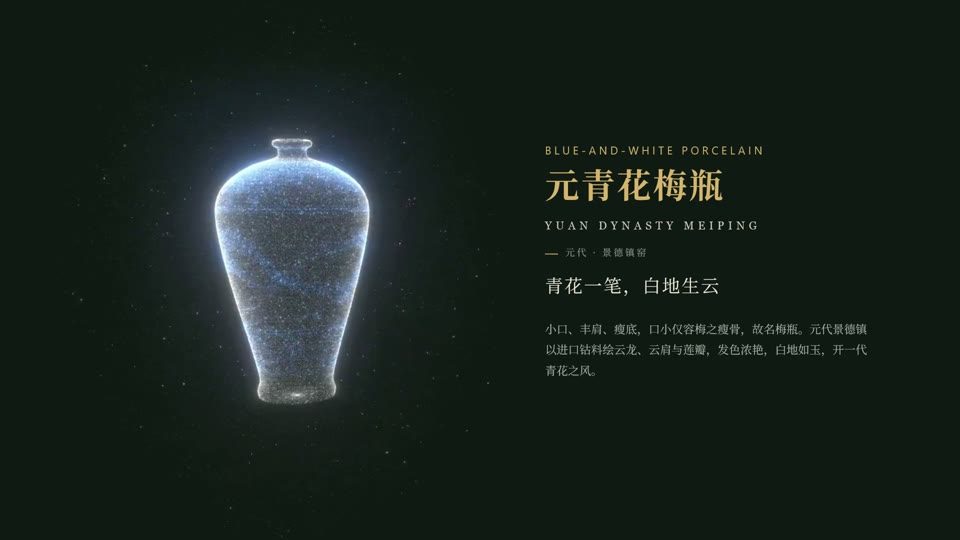
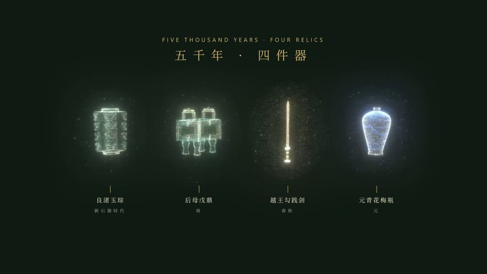
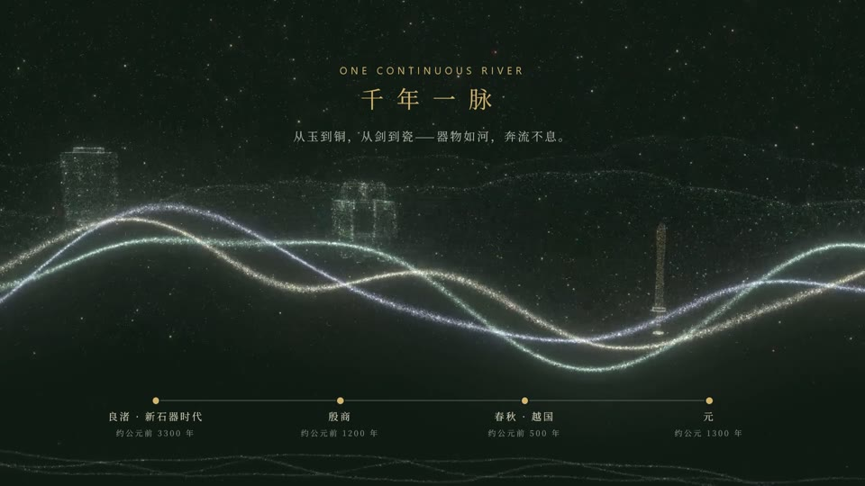
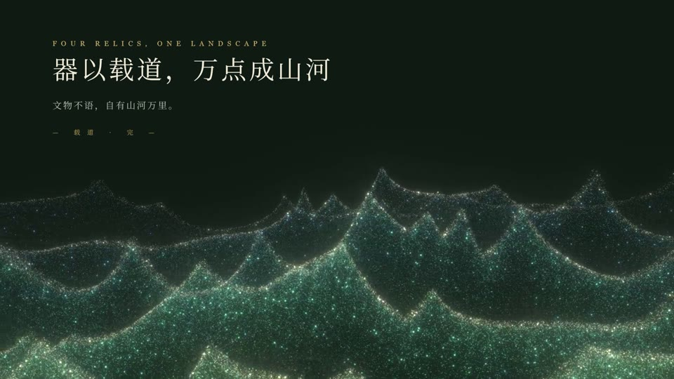

器以载道。五千年的光，在尘埃里重新聚拢——以数十万粒子重现良渚玉琮、后母戊鼎、越王勾践剑与元青花梅瓶。
成片视频 · 90 秒 · 1080p · 含配乐
浏览器中实时渲染粒子。点击、空格或方向键翻页，文物会消散再凝聚；按住拖动可旋转文物，F 键全屏。
打开演示 ›8 页，文字、标签、时间轴均可直接编辑；每页背景是循环的粒子视频，放映时翻页即凝聚成形。约 69 MB。
下载 .pptx ›90 秒成片，配乐为程序合成的古筝式拨弦、编钟与风声。适合直接分享或在大屏播放。约 56 MB。
下载 .mp4 ›







外方内圆，节节相叠，四角以阴线琢出神人兽面。
通高 133 厘米，重 832.84 千克，已知最重的中国古代青铜器。
菱形暗格纹，剑格嵌琉璃与绿松石，鸟篆“越王鸠浅，自乍用剑”。
小口丰肩，钴料绘云龙、云肩与莲瓣，开一代青花之风。
node render.jsnode render-clips.js 然后 node build-pptx.jsnode build-ppt.js